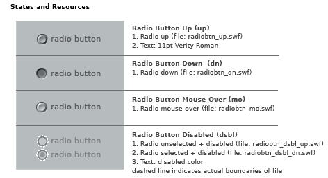

example
LZX Reference
filename: radio.lzx
The default radio button has a height and width of 14 pixels. The button is a scalable vector resource which can be proportionally resized without distortion. Disproportional scaling will result in an oval button.
Radio buttons are constructed as single resources for each of the various states. The placement of text associated with a radio button has been defined to compliment the default size. Text is positioned to the right of the button. The disabled state, although visually smaller, has the same dimensions as the enabled versions. A transparent circle (indicated by white dashed line) ensures alignment when a button changes state.
